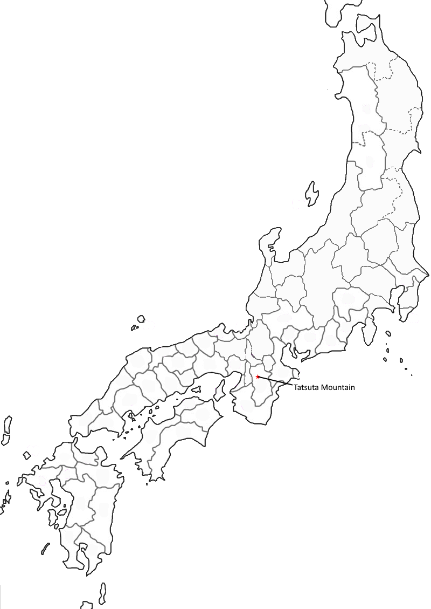
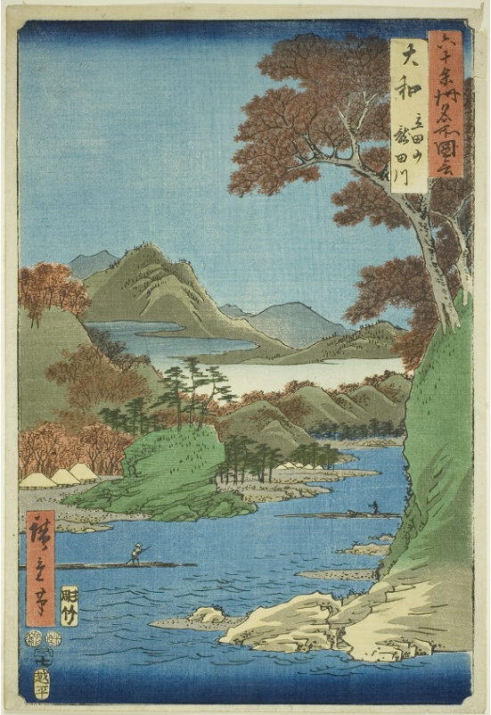

Poem #108
hana no chiru
koto ya wabishiki
harugasumi
tatsuta no yama no
uguisu no koe
Might he be distressed
because the blossoms scatter -
the warbler whose song
we hear at Mount Tatsuta
where the haze of springtime stands?
Poem #283
tatsutagawa
momiji midarete
nagarumeri
wataraba nishiki
naka ya taenamu
Were one to cross it,
the brocade might break in two -
colored autumn leaves
floating in random patterns
on the Tatsuta River.
Poem #284
kamunabi no
yama o sugiyuku
aki nareba
tatsutagawa ni zo
nusa wa tamukuru
Since autumn herself
is the traveler crossing
the sacred mountain,
she makes her own offerings
to the Tatsuta River.
Poem #294
chihayaburu
kamiyo mo kikazu
tatsutagawa
karakurenai ni
mizu kukuru to wa
There was not the like
even in the fabled age
of the mighty gods:
this fine red pattern dyed
in Tatsuta's waters.
Poem #298
tatsutahime
tamukuru kami no
areba koso
aki no ko no ha no
nusa to chirurame
Tatsutahime
must have oblations to make
to gods on her way:
that is why autumnal leaves
scatter like fragments of cloth.
Poem #300
kamunabi no
yama o sugiyuku
aki nareba
tatsutagawa ni zo
nusa wa tamukuru
Since autumn herself
is the traveler crossing
the sacred mountain,
she makes her own offerings
to the Tatsuta River.
Poem #302
momijiba no
nagarezariseba
tatsutagawa
mizu no aki o ba
tare ka shiramashi
Were it not that leaves
of many hues float downstream,
who would be aware
of the coming of autumn
to the Tatsuta River?
Poem #311
toshi goto ni
momijiba nagasu
tatsutagawa
minato ya aki no
tomari naruramu
Is its mouth the place
where autumn finds a harbor -
the Tatsuta River,
which every year sends downstream
leaves in a myriad hues?
Poem #314
tatsutagawa
nishiki orikaku
kaminazuki
shigure no ame o
tatenuki ni shite
Taking warp and weft
from the wintry showers falling
in the Godless Month,
the Tatsuta River weaves
a fabric of rich brocade.


Artist: Utagawa Hiroshige
Title: Yamato Province: Tatsuta Mountain and Tatsuta River (Yamato, Tatsutayama, Tatsutagawa), from the series "Famous Places in the Sixty-odd Provinces (Rokujuyoshu meisho zue)"
Cultural significance
Tatsuta (both mountain and river) was most known for its autumn leaves, as said in the home page. It was believed that autumn went through the western gate of Tatsuta to enter into Yamato (Plutschow)
Of note is poem 298, which would serve as evidence for Plutschow's reasoning that the placenames have a religious element. The footnote in Mchullough's translation states
“Like a human being, Tatsutahime, the goddess of autumn, makes offerings to the travel (road-guardian) gods (dosojin) as she journeys toward the west. Colored strips of cloth (nusa) were commonly used as Shinto offerings."